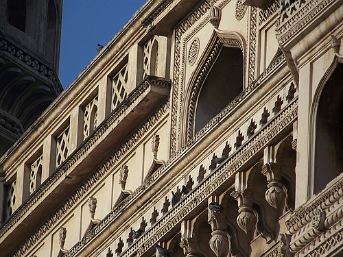
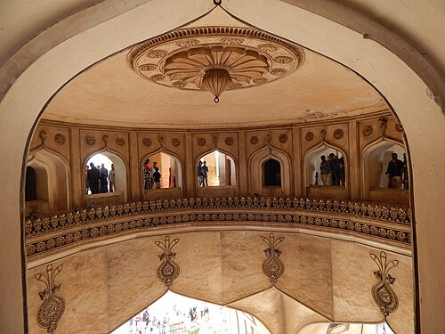

The Charminar (lit. 'four minarets') is a monument located in Hyderabad, Telangana, India. Constructed in 1591, the landmark is a symbol of Hyderabad and officially incorporated in the emblem of Telangana.[3] The Charminar's long history includes the existence of a mosque on its top floor for more than 434 years. While both historically and religiously significant, it is also known for its popular and busy local markets surrounding the structure, and has become one of the most frequented tourist attractions in Hyderabad. Charminar is also a site of numerous festival celebrations, such as Eid-ul-adha and Eid al-Fitr,[4] as it is adjacent to the city's main mosque, the Makkah Masjid.
> The Charminar was constructed at the intersection of the historical trade route that connects the city to international markets through the port city of Machilipatnam.[12]: 195 The Old City of Hyderabad was designed with Charminar as its centrepiece.[13] The city was spread around the Charminar in four different quadrants and chambers, segregated according to the established settlements. Towards the north of Charminar is the Char Kaman, or four gateways, constructed in the cardinal direction.[10][12][14][15]: 170 Additional eminent architects from Persia were also invited to develop the city plan. The structure itself was intended to serve as a mosque and madrasa. It is of Indo-Islamic architecture style, incorporating Persian architectural elements. A sample of Charminar is said to have been created at Dabirpura/Nagaboli graveyard before the actual construction.
The Charminar masjid is a square structure with each side being 20 metres (66 ft) long. Each of the four sides has one of four grand arches, each facing a fundamental point that opens directly onto the street in front of it. At each corner stands an exquisitely shaped 56 metres (184 ft) high minaret, with a double balcony. Each minaret is crowned by a bulbous dome with dainty, petal-like designs at the base. Unlike the minarets of Taj Mahal, Charminar's four fluted minarets are built into the main structure. There are 149 winding steps to reach the upper floor. The structure is also known for its profusion of stucco decorations and the arrangement of balustrades and balconies.[18]